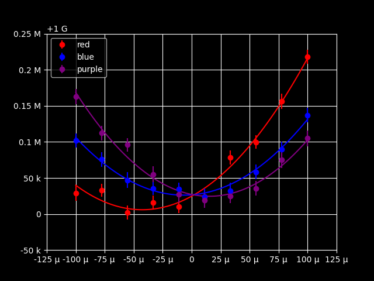

Examples
Test Cases
The :mod:`sciform` test suite contains hundreds of example formatting test cases which showcase the many available formatting options.
Formatter
Here are a small selection of examples which demonstrate some of the available formatting options.
>>> from sciform import Formatter >>> num = 12345.54321 >>> formatter = Formatter(exp_mode="scientific", round_mode="sig_fig", ndigits=4) >>> print(formatter(num)) 1.235e+04 >>> formatter = Formatter( ... exp_mode="engineering", ... round_mode="dec_place", ... ndigits=10, ... sign_mode=" ", ... superscript=True, ... ) >>> print(formatter(num)) 12.3455432100×10³ >>> formatter = Formatter( ... exp_mode="fixed_point", ... upper_separator=" ", ... decimal_separator=",", ... lower_separator="_", ... sign_mode="+", ... ) >>> print(formatter(num)) +12 345,543_21
>>> num = 0.076543 >>> formatter = Formatter( ... exp_mode="scientific", exp_val=-3, exp_format="parts_per", add_ppth_form=True ... ) >>> print(formatter(num)) 76.543 ppth >>> formatter = Formatter( ... exp_mode="scientific", exp_val=-2, exp_format="prefix", add_c_prefix=True ... ) >>> print(formatter(num)) 7.6543 c >>> formatter = Formatter(exp_mode="scientific", exp_val=-6, exp_format="prefix") >>> print(formatter(num)) 76543 μ >>> formatter = Formatter(exp_mode="percent") >>> print(formatter(num)) 7.6543%
>>> num = 3141592.7 >>> unc = 1618 >>> formatter = Formatter() >>> print(formatter(num, unc)) 3141593 ± 1618 >>> formatter = Formatter( ... exp_mode="engineering", ... exp_format="prefix", ... round_mode="pdg", ... pm_whitespace=False, ... ) >>> print(formatter(num, unc)) (3.1416±0.0016) M
>>> num = 314159.27 >>> unc = 1618 >>> formatter = Formatter( ... exp_mode="engineering_shifted", round_mode="pdg", paren_uncertainty=True ... ) >>> print(formatter(num, unc)) 0.3142(16)e+06
Format Specification Mini Language
>>> from sciform import SciNum
>>> print(f"{SciNum(1234.432):0=+5.6f}")
+001234.432000
In the preceding example 0= indicates that left padding should be done using '0' characters. The + indicates that a sign symbol should always be displayed. The 5 preceding the round mode symbol (.) indicates that the number should be left padded to the 10+5 (ten-thousands) decimal place. The .6 indicates that the number will be rounded to six digits past the decimal points. The f indicates that the number will be displayed in fixed point exponent mode.
>>> print(f"{SciNum(123, 0.123):#!2R()}")
0.12300(12)E+03
In the preceding example the # alternate flag combined with R indicates that the number will be formatted in the shifted engineering exponent mode with a capitalized exponent symbol 'E'. !2 indicates that the number will be rounded so that the uncertainty has two significant figures. The () indicates that the value/uncertainty pair should be formatted using the parentheses uncertainty format.
>>> print(f"{SciNum(123):ex-3p}")
123000 m
In the preceding example the e indicates that scientific notation should be used. The x-3 indicates that the exponent will be forced to equal -3. Finally the p indicates that the SI prefix mode should be used.
>>> print(f"{SciNum(123): .-1f}")
120
In this example the leading space indicates a leading space should be included for non-negative numbers so that positive and negative numbers have the same justification. The .-1 indicates the number should be rounded to one digit before the decimal point and the f indicates that fixed point mode should be used.
SciNum, and Global Options
Here are a small selection of examples which demonstrate some of the available string formatting options. Note that many options are not available through the :ref:`fsml`, so these options must be selected by configuring the global options. Here this is done using the :class:`GlobalOptionsContext` context manager, but this could have been done using :func:`set_global_options` instead.
>>> from sciform import SciNum, GlobalOptionsContext
>>> num = SciNum(12345.54321)
>>> print(f"{num:!4e}")
1.235e+04
>>> print(f"{num: .10r}")
12.3455432100e+03
>>> with GlobalOptionsContext(
... upper_separator=" ",
... decimal_separator=",",
... lower_separator="_",
... ):
... print(f"{num:+}")
+12 345,543_21
>>> num = SciNum(0.076543)
>>> with GlobalOptionsContext(exp_format="parts_per", add_ppth_form=True):
... print(f"{num:ex-3}")
...
76.543 ppth
>>> with GlobalOptionsContext(exp_format="prefix", add_c_prefix=True):
... print(f"{num:ex-2}")
...
7.6543 c
>>> with GlobalOptionsContext(exp_mode="scientific", exp_val=-6, exp_format="prefix"):
... print(f"{num:ex-6}")
...
76543 μ
>>> print(f"{num:%}")
7.6543%
>>> num_unc = SciNum(3141592.7, 1618)
>>> print(f"{num_unc}")
3141593 ± 1618
>>> with GlobalOptionsContext(round_mode="pdg", pm_whitespace=False):
... print(f"{num_unc:rp}")
...
(3.1416±0.0016) M
>>> num_unc = SciNum(314159.27, 1618)
>>> with GlobalOptionsContext(round_mode="pdg"):
... print(f"{num_unc:#r()}")
...
0.3142(16)e+06
Plotting and Tabulating Fit Data
We are given 3 data sets:
We want to perform quadratic fits to these data sets, visualize the results, and print the best fit parameters including the uncertainty reported by the fit routine. For these tasks we will require the numpy, scipy, matplotlib, and tabulate packages.
Without sciform
Without sciform we can perform the fit and plot the data and best fit lines and print out a table of best fit parameters and uncertainties:
This produces the plot:

And the table:
This plot and table suffer from a number of shortcomings which impede human readability.
- In the table, the exponents for the values and uncertainties differ, making it hard to identify the significant digits of the value.
- The number of digits displayed for the values is not correlated with the uncertainty for that value. For example, the y0 values are shown with precision to the 10+8 place, but the uncertainty indicates precision down to the 10+3 place.
- In the table, the exponents vary from one dataset to the next. It is hard to see these differences at a glance.
- The tick labels on the plot are illegible because each value has so many digits.
Of course, even without :mod:`sciform`, it would be possible to make manual adjustments to the plot and the table to improve these data visualizations. However, :mod:`sciform` will allow us to make the required changes in a general and automated way.
With sciform
We can address these problems using :mod:`sciform` by:
- Using prefix scientific notation to label the plot axes. This will greatly reduce the number of symbols needed for each tick value.
- Using value/uncertainty formatting in the table to collapse the value and error column pairs into individual columns. This will make obvious the relative scale between the uncertainty and the value. Using sciform, the significant digits displayed for the value will always match the precision of the uncertainty. We will use the parentheses uncertainty format.
- Using engineering notation for the value/uncertainty in the table. This will make the relative scale between different rows obvious.
To do this we import :mod:`sciform` and make some helper functions for displaying the plot axes as described:
This produces the plot:
and the table:
We can see the plot and table are immediately much more legible. Less characters are needed to communicate the data in both visualizations. The relative scaling of parameters between datasets and the relative scaling between the value and uncertainty for each entry are immediately clear.
Mapping Over Collections
It may be convenient to apply sciform mapping to collections (sets, lists, arrays, etc.) of numbers.
>>> from sciform import Formatter >>> >>> val_formatter = Formatter( ... exp_mode="engineering", ... exp_format="prefix", ... ndigits="all", ... paren_uncertainty=True, ... ) >>> val_err_formatter = Formatter( ... exp_mode="engineering", ... exp_format="prefix", ... ndigits="pdg", ... paren_uncertainty=True, ... ) >>> val_list = [1000, 2000, 3000] >>> err_list = [200, 400, 600] >>> >>> val_str_list = list(map(val_formatter, val_list)) >>> print(val_str_list) ['1 k', '2 k', '3 k'] >>> >>> val_err_str_list = list(map(val_err_formatter, val_list, err_list)) >>> print(val_err_str_list) ['1.00(20) k', '2.0(4) k', '3.0(6) k']
We may also want to map over higher dimensional numpy arrays. numpy.vectorize() makes this easy.
>>> import numpy as np >>> >>> vec_val_formatter = np.vectorize(val_formatter) >>> vec_val_err_formatter = np.vectorize(val_err_formatter) >>> arr = np.array([[1e6, 2e6, 3e6], [4e6, 5e6, 6e6], [7e6, 8e6, 9e6]]) >>> >>> arr_err = np.array([[9e4, 8e4, 7e4], [6e4, 5e4, 4e4], [3e4, 2e4, 1e4]]) >>> >>> print(vec_val_formatter(arr)) [['1 M' '2 M' '3 M'] ['4 M' '5 M' '6 M'] ['7 M' '8 M' '9 M']] >>> print(vec_val_err_formatter(arr, arr_err)) [['1.00(9) M' '2.00(8) M' '3.00(7) M'] ['4.00(6) M' '5.00(5) M' '6.00(4) M'] ['7.000(30) M' '8.000(20) M' '9.000(10) M']]
Appending Units
The :mod:`sciform` :ref:`SI prefix mode<exp_str_replacement>` allows exponent strings such as 'e+03' to be replaced with their SI prefix counterparts such as 'k'. In scientific applications numbers and numbers with uncertainty include units such as 'g', 's', and 'Hz'. The simple utility function below appends units to a :mod:`sciform` output string in such a way that, if an SI prefix is present the unit is appended to the prefix, otherwise there is a space between the unit and the number.
>>> import re
>>> from sciform import FormattedNumber, SciNum
>>>
>>> def add_units(formatted_number: FormattedNumber, unit: str) -> FormattedNumber:
... """Add units to a number string."""
... if re.match(r"[a-zA-Z]", formatted_number[-1]):
... num_with_units = f"{formatted_number}{unit}"
... else:
... num_with_units = f"{formatted_number} {unit}"
... return FormattedNumber(
... num_with_units,
... formatted_number.value,
... formatted_number.uncertainty,
... formatted_number.populated_options,
... )
>>>
>>> num_str = format(SciNum(123e6, 0.45e6), "rp()")
>>> print(num_str)
123.00(45) M
>>> print(add_units(num_str, "Hz"))
123.00(45) MHz
>>> num_str = format(SciNum(123, 0.45), "rp()")
>>> print(add_units(num_str, "Hz"))
123.00(45) Hz
>>> num_str = format(SciNum(123e6, 0.45e6), "e()")
>>> print(add_units(num_str, "Hz"))
1.2300(45)e+08 Hz
The utility function has been written to preserve the :class:`FormattedNumber` structure of the input so that the output numbers with units can be still be e.g. converted to LaTeX:
>>> num_str = format(SciNum(123e6, 0.45e6), "rp()")
>>> print(add_units(num_str, "Hz").as_latex())
$123.00(45)\:\text{MHz}$
This utility function can be used for more complex units e.g.:
>>> num_str = format(SciNum(123e3, 0.45e3), "rp()") >>> print(add_units(num_str, "m/s")) 123.00(45) km/s
however, you must remember that :mod:`sciform`, of course, only has control over the single prefix out front. If the user wants automated selection of multiple prefixes within a compound unit such as 'cm/ms', then they will need to do logic to determine the exact unit string or utilize a more sophisticated unit framework. At this point it would be recommended to, instead, directly calculate the unit, rescale the numerical inputs to :mod:`sciform` formatting, and append the entire unit without utilizing the :mod:`sciform` SI prefix mode.